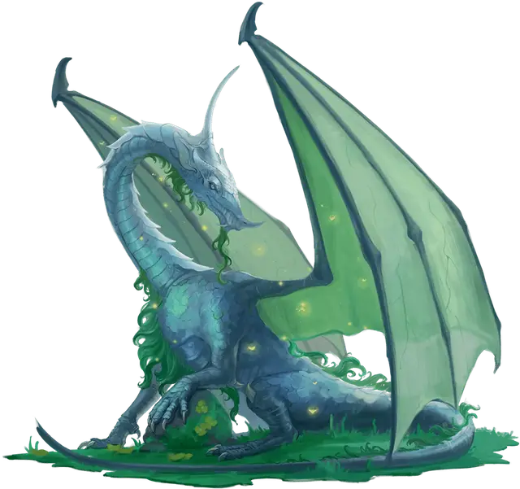

Молодой луннокаменный дракон
Young Moonstone Dragon
Большой Дракон, нейтральный

Класс Доспеха 18 (природный доспех)
Хиты 144 (17к10 + 51)
Скорость 40 футов, летая 80 футов
| мод | спас | ||
|---|---|---|---|
| СИЛ | 18 | +4 | +4 |
| ЛОВ | 16 | +3 | +3 |
| ТЕЛ | 17 | +3 | +6 |
| мод | спас | ||
|---|---|---|---|
| ИНТ | 18 | +4 | +7 |
| МДР | 17 | +3 | +6 |
| ХАР | 19 | +4 | +7 |
Навыки Восприятие +6, Скрытность +6, Убеждение +7
Иммунитет к состояниям очарование
Чувства слепое зрение 30 футов, тёмное зрение 120 футов, пассивное Восприятие 16
Языки Общий, Драконий, Сильван
Опасность 8 (3900 опыта)
Бонус мастерства +3
Особенности
Персонализация дракона. Как уже говорилось в «Руководстве Мастера», вы можете настроить блок статистики любого дракона, чтобы отразить его уникальный характер. Незначительные изменения, такие как приведенные ниже, легко сделать, и они не влияют на ПО дракона. (Fizban's Treasury of Dragons)
Языки. Большинство драконов предпочитают говорить на Драконьем, но для общения с союзниками и приспешниками изучают Общий. Но, учитывая высокий Интеллект и продолжительный срок жизни, драконы могут легко выучить дополнительные языки. Вы можете добавить языки в блок статистики дракона.
Навыки. Большинство драконов владеют навыками Восприятие и Скрытность, а многие драконы владеют дополнительными навыками. Как и в случае с языками, вы можете изменить список навыков дракона (даже удвоить бонус мастерства), чтобы отразить его интересы и занятия. Вы также можете наделить дракона владениями инструментами, особенно если дракон проводит время в гуманоидной форме.
Другие черты и действия. Вы можете заимствовать черты и действия у других монстров, чтобы придать дракону уникальную изюминку. Рассмотрим эти примеры:
Изменение формы. Вы можете решить, что дракон приобретает это действие в более раннем возрасте, чем обычно, особенно если вы хотите представить в своей кампании дракона в гуманоидной форме. (См. металлические драконы).
Поглощение урона. Вы можете решить, что красный или золотой дракон не только не получает урон от огня, но и исцеляется от него. (См. мясной голем [flesh golem]).
Облёт. Дракон - проворный летун, быстро вылетающий из зоны досягаемости врагов. (См. перитон [peryton]).
Подражание. Изображение персонажей или их союзников может стать забавным трюком для хитрого дракона. (См. кенку [kenku]).
Омоложение. Вы можете решить, что драконы в вашей кампании, будучи неотъемлемой частью Материального плана, почти невозможно уничтожить. Жизненная сущность дракона может храниться в яйце, из которого он появился на свет, в его кладе или в пещерном зале в центре мира, так же как сущность лича спрятана в филактерии. (См. лич [lich]).
Особые чувства. У большинства драконов есть слепое зрение и темное зрение. Вы можете улучшить зрение до истинного зрения или наделить дракона скоростью рытья или чувством вибрации. (См. зрение и свет).
Прокладывание туннеля. Эта особенность может быть присуща любому дракону, обладающему скоростью копания - он может двигаться сквозь твёрдую породу, оставляя за собой туннель. (См. бурый увалень [umber hulk]).
Действия
Мультиатака. Дракон совершает одну атаку Укусом и две Когтями.
Укус. . Рукопашная атака оружием: +7 к попаданию, досягаемость 10 фт., одна цель. Попадание: 15 (2к10+4) колющего урона плюс 5 (1к10) урона излучением.
Коготь. . Рукопашная атака оружием: +7 к попаданию, досягаемость 5 фт., одна цель. Попадание: 11 (2к6+4) рубящего урона.
Использование заклинаний. Дракон накладывает одно из следующих заклинаний, не требующее компонентов заклинания и использующее Харизму в качестве базовой характеристики (Сл спасброска от заклинания 15):
• 1/день: огонь фей [faerie fire], умиротворение [calm emotions].
Оружия дыхания (перезарядка 5-6). Дракон использует один из следующих видов оружия дыхания:
• Дыхание снов. Дракон выдыхает туман в 90-футовом конусе. Каждое существо в этой области должно преуспеть в спасброске Телосложения Сл 14, иначе теряет сознание на 10 минут. Этот эффект заканчивается для существа, если оно получает урон или кто-то использует действие, чтобы его разбудить.
• Дыхание лунного света. Дракон выдыхает луч лунного света линией длиной 60 фт. и шириной 5 фт.. Каждое существо в этой области должно совершить спасбросок Ловкости Сл 14, в случае провала получая 38 (7к10) урона излучением или половину урона при успехе.
Описание
Согласно древним легендам, когда боги пришли в Первый мир и попытались заселить его своими последователями-гуманоидами, один умный дракон сбежал в страну Фей, чтобы спрятать кладку яиц. Магия этого фейского царства наполнила яйца, из которых вылупились первые луннокаменные драконы. Их потомков теперь можно встретить по всей Стране Фей.
Луннокаменные драконы - изящные и элегантные существа с опаловой чешуей и изумрудно-зеленым мехом на подбородке, груди, спине и хвосте. Один рог у луннокаменного дракона дугообразно изгибается на затылке, другой - на кончике носа; оба рога вместе образуют форму, напоминающую тонкий полумесяц. В раннем возрасте луннокаменные драконы игривы и порывисты, но лучшие из них становятся мудрыми учителями и рассказчиками, которые поддерживают сообщества Страны Фей. Худшие из них напыщенны и невоспитанны, но даже они остаются мягкими по природе и любопытными ко всему - особенно к путешественникам из дальних стран.
Луннокаменные драконы могут проецировать себя в царство снов, чтобы общаться с существами, которые спят возле их логова. Таким образом, они вдохновляют художников и поэтов, поощряют великих мыслителей и подталкивают искателей приключений на подвиги. Иногда они дают советы нуждающимся или просят помощи у искателей приключений, чтобы побудить их к величию.
Как правило, луннокаменные драконы не особенно интересуются золотом и медью, но любят серебро, платину и мифрилл. Они также дорожат сокровищами, ценность которых нелегко оценить - песней, исполненной от всего сердца, прядью волос любимого человека или картиной с изображением любимого места. История счастливых времен, запомнившаяся с любовью, для луннокаменного дракона ценнее мешка золота.